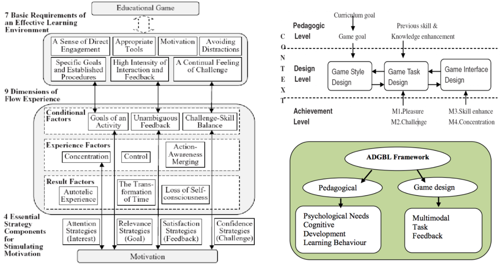

Role
UX Designer
Team
Dr. Erik Harpstead, Cora Wang
Time
6 Weeks, Fall 2019
Tools
Sketch, Adobe Xd, Figma, Kenney Assets
Redesigning the Interactive Principles site to make it easier for novice game designers to learn the fundamental learning science principles behind game design.
Dr. Erik Harpstead teaches a class at Carnegie Mellon called 'Designing Educational Games.' This site is used to teach students in his course about learning science principles used in educational games. He wanted to sort of make a game for learning these principles and adapt them within his own curriculum. Hence, the creation of a virtual deck of cards.
I was the UX Designer for my team and worked with one developer. I worked on the website redesign: both UI changes and structural site changes to make it easier to navigate the information. I also prototyped a 3D game that could be used for even more interactive learning.
The changes are currently being implemented on the site for future iterations of the course. Other students from the Education Technology Center at Carnegie Mellon have also been hired to implement the game design that I prototyped, which is really exciting!
Our overarching challenge was not only to create something that could be useful in this class, but also could be a good framework in educational game design for higher education. This can be broken down into two sub-goals for the Interactive Learning Science site:
This class is taken by a mixed population of designers, developers, and cognitive scientists. We proposed a new organization more applicable from a developer/maker point of view.
We still kept the organization based on Learning Science Principles, so either learning option was available to students, along with an introduction on how each framework is categorized.
The menu-bar has more clarity as each category has an explanation. The bar is collapsable if a student already feels pretty comfortable with the categories.
A brighter, pastel color scheme grabs student attention!
We created a game to learn about game design principles (very meta, I know). This increased the interactivity piece of the site tremendously.
On the live site, we took a look at the layout of the cards, the detailed explanation when looking at one card, and then menu functionality/features.
When starting this project, I had no background in game design. I spent some time learning about the different learning science principles and how they are applied in educational games. It was fun to be able to play games as research to get a better sense of how people learn in games!
Better understanding the principles
Playing educational games as research
Pretty quickly, we realized how confusing the categorization by learning science principle is without any background knowledge. We explored other, more intuitive ways of grouping principles. The three ideas we took a deep dive into were:
01 Designing by Hierarchy/Priority
02 Questions related to parts of a game
03 'MDA' Model - Mechanics, Dynamics, Aesthetics
We also explored other academic game design frameworks.
After surveying nearly 20 students, we found that they preferred being able to understand the principles in the direct context of the game they would be desgining. This makes the content most relevant to the population of students that takes Dr. Harpstead's class - designers and developers. We decided to move forward on this idea with one constraint in mind: Dr. Harpstead still wanted the option to organize by learning science principles.
We explored different layouts to access both the Gaming Principles and Learning Science Principles categorization methods. Dr. Harpstead really liked Option 1, but didn't want the page to feel "empty" if nothing is selected.
To make learning on the site more enjoyable we played with more vibrant color schemes.
These were the options the team narrowed down on for A/B Testing
Currently, no part of the site explains the categories and what each categorization means. We decided that an intro could be useful for this. We conducted A/B tests to figure out how to layout the site, what introduction was preferred, and what color scheme worked best.
Color Options
Menu Option (vs. Live Site)
Intro Options
Although now understanding the principles would be more intuitive, there wasn't a clear way to reinforce the principles. My team and I came up with the idea of creating a game. What better way to learn game design than through a game, am I right?
The team explored two main routes for games:
01 Designing your own game
02 In the context of a traditional game
For designing your own game, we were inspired by Choose your Own Adventure and some of the games where you build your own burger or sushi. We noticed it was hard to map certain principles in these games. In terms of traditional games, math games and cooking games seemed easiest to map to.

We really liked the realm of cooking games, which would make it more fun to learn these principles while still accomplishing reinforcement. We were heavily inspired by the game Overcooked.

Examples of principles within a cooking game

Here are samples of the current state of the game mockup. This mockup is going to be implemented as a game by students in the Entertainment Technology Center.

This site is going to be deployed in the next iteration of the 'Designing Educational Games' class while the next iteration of the game is currently being implemented.
01 Increased student familiarity with principles (qualitative)
02 Click-through rate
03 Number of students playing the game
04 Conversion rate (new students that end up taking the class)
A lot of the time, Cora and I were working in metaphors - trying to map the learning science principles to parts of our game. I think what helped us get through was breaking down the information into sub-buckets that we could tackle and really pushing the limits of an ideat till it completely busts.
02 Game Design = Psychology in PracticeThis was my first exposure to game design and I absolutely loved it. I learned a lot about the psychology and science behind designing games. Even every small change to the game there is an underlying principle or logic it's tied to which really fascinated me.